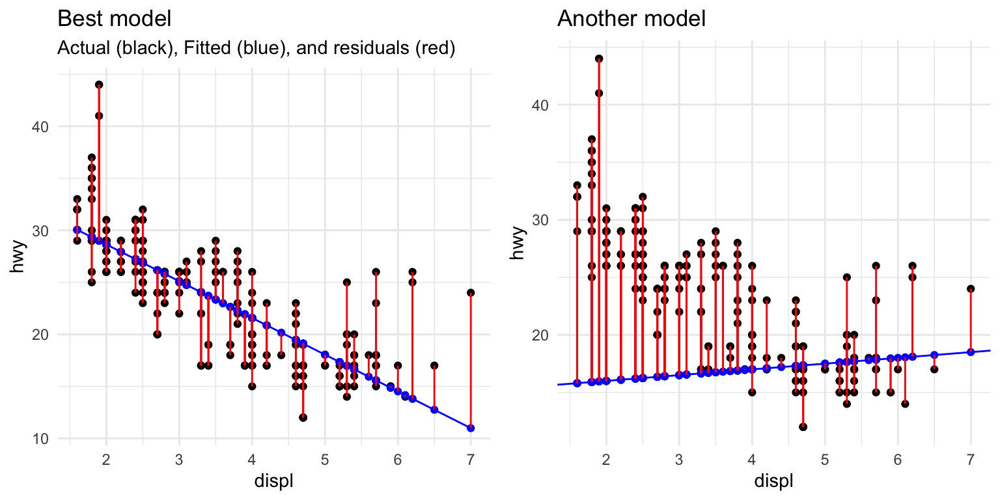
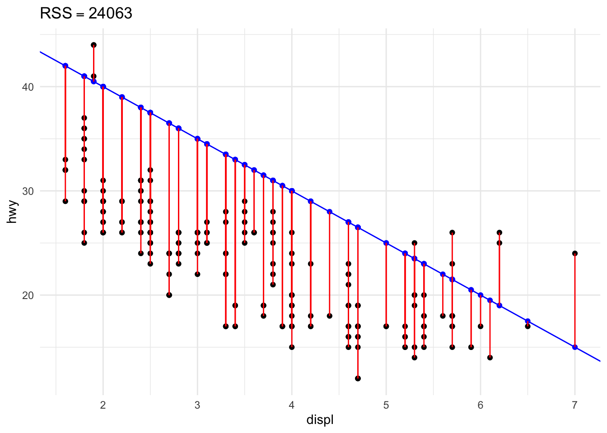
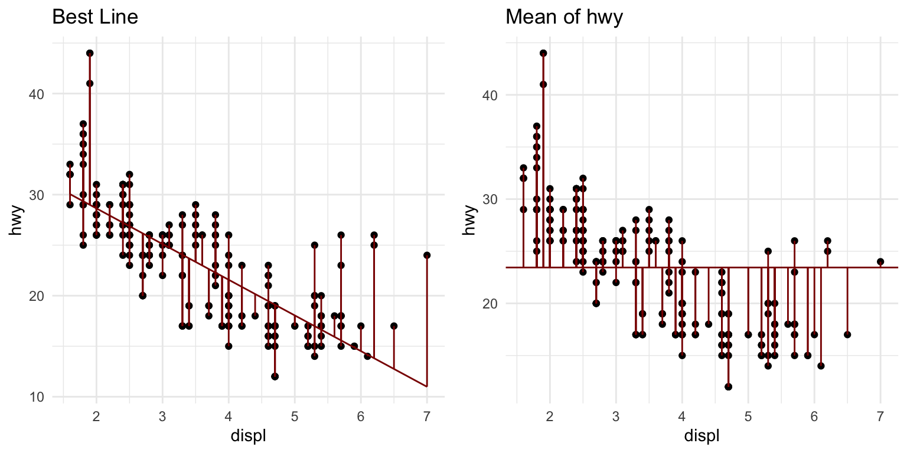
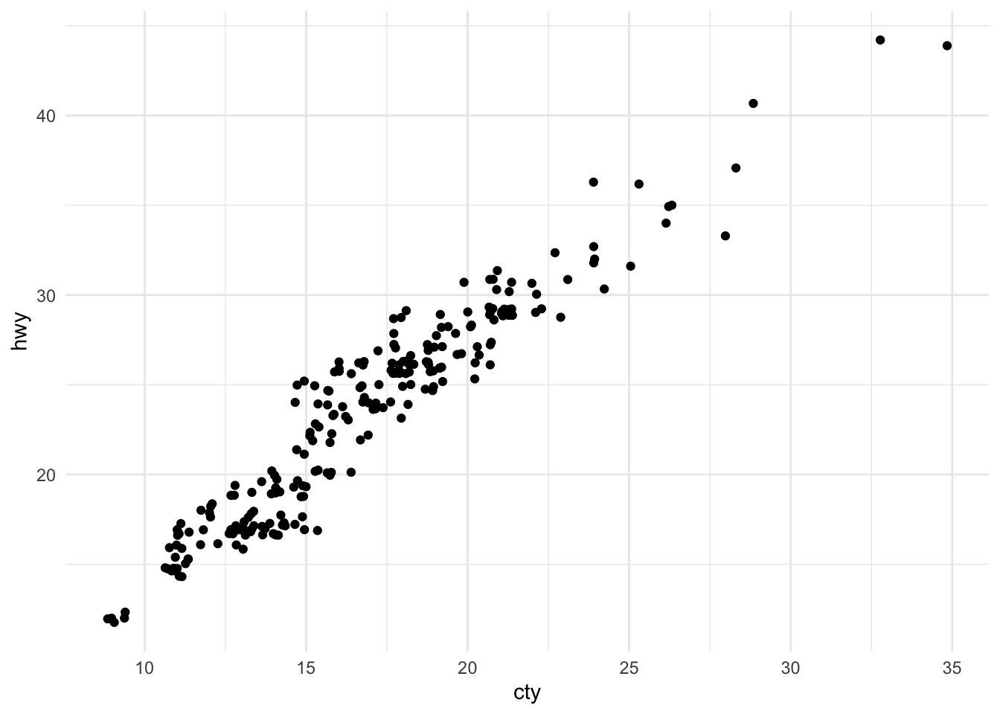

Model Fitting and Evaluation
library(tidyverse) #for plotting and summarizing
library(moderndive) #for nice model output
library(broom) #for nice model output
library(gridExtra) #for nicely organizing plots
library(openintro) #for data
theme_set(theme_minimal()) #changes the theme of ggplots to theme_minimal, my personal favoriteGOAL:
By the end of these notes and activities, you should be able to perform the following tasks.
- Have a high-level understanding of how linear model coefficients are estimated.
- Use \(R^2\) to describe how well your response variable can be explained by the model.
- Use \(\hat{\sigma}\) (also called \(s_e\) or residual standard error) to estimate how variable the predictions may be.
Model Fitting
Up until now, we have mostly been concerned with interpreting coefficients from linear models, but where do they come from?
The “best” coefficients are those that minimize the sum of the squared residuals. This is referred to as the least squares criterion. If you like mathematical equations, it can be written mathematically, as:
\[ \text{min}_{\bf{\beta}} \sum_{i=1}^n[y_i - (\beta_0 + \beta_1 x_{i1} + ... + \beta_p x_{ip})]^2 \]
Calculus and linear algebra can be used to solve the minimization problem explicitly. We will not go through that in this class, but I encourage you to take Linear Algebra and Computational Linear Algebra if learning those details is of interest to you.
Instead let’s look at this in a picture. The graph on the left is the least squares solution. The one on the right is just another line I made up.
lm_displ <- lm(hwy ~ displ,
data=mpg)
p1 <- augment(lm_displ, data = mpg) %>%
ggplot(aes(x = displ, y = hwy)) +
geom_point() +
geom_line(aes(x = displ, y = .fitted), color = "blue", size = .5) +
geom_point(aes(x = displ, y = .fitted), color = "blue") +
geom_segment(aes(xend = displ,
yend = 35.70 - 3.53*displ),
color = "red") +
scale_x_continuous(breaks = 1:8) +
scale_y_continuous(breaks = seq(10,60,10)) +
labs(title = "Best model", subtitle = "Actual (black), Fitted (blue), and residuals (red)")
p2 <- mpg %>%
ggplot(aes(x = displ, y = hwy)) +
geom_point() +
geom_abline(slope = .5, intercept = 15, color = "blue", size = .5) +
geom_point(aes(x = displ, y = 15 + .5*displ), color = "blue") +
geom_segment(aes(xend = displ,
yend = 15 + .5*displ),
color = "red") +
scale_x_continuous(breaks = 1:8) +
scale_y_continuous(breaks = seq(10,60,10)) +
labs(title = "Another model")
grid.arrange(p1, p2, nrow = 1)
Below I compute the sum of the squared residuals for the best fit line (I have rounded the coefficients so this is not exact).
stats_best <- mpg %>%
mutate(fitted = 35.70 - 3.53*displ,
resid = hwy - fitted,
resid_squared = resid^2)
stats_beststats_best %>%
summarize(rss_best = sum(resid_squared))YOUR TURN!
In the two graphs above, what do you notice about the size of the residuals, in general?
How could we represent the squared residuals on the graph?
Modify the code above to compute the sum of the squared residuals for the model from the graph on the right? How does that compare to the sum of the squared residuals from the least squares line?
In the code below, try modifying the
my_y_intandmy_slopevalues, which are your intercept and slope for the line. When you run the code, the residual sum of squares (RSS) will be shown in the title. Play around with this for awhile. Are there any other lines you can fit that are very unlike the best fit line but still have small RSS?
my_y_int = 50 #put your y-intercept here
my_slope = -5 #put your slope here
rss <- mpg %>%
summarize(rss = sum((hwy - (my_y_int + my_slope*displ))^2)) %>%
pull(rss)
mpg %>%
ggplot(aes(x = displ, y = hwy)) +
geom_point() +
geom_abline(slope = my_slope, intercept = my_y_int, color = "blue", size = .5) +
geom_point(aes(x = displ, y = my_y_int + my_slope*displ), color = "blue") +
geom_segment(aes(xend = displ,
yend = my_y_int + my_slope*displ),
color = "red") +
labs(title = bquote(RSS == .(rss)))
Let’s also take a little bit of time exploring this website.
Evaluation
- Is our model accurate?
- Does it predict new observations well?
Variance explained in response: \(R^2\)
Recall that one of our goals in building a model is to better explain the variation in our response variable, \(y\).
Let’s take a look at the mpg data again. First, let’s just look at a distribution of highway mpg, hwy.
ggplot(mpg) +
geom_histogram(aes(x = hwy), bins = 30) +
geom_vline(aes(xintercept = mean(hwy)), color = "darkred") +
theme_minimal()
The standard deviation of hwy is 5.9546434 and the variance is 35.4577785. These are ways we’ve talked about measuring variation. We could also use the sum of the squared deviations from the mean, SST (total sum of squares):
mpg %>%
summarize(sst = sum((hwy - mean(hwy))^2))Why do we like this measure?! It is going to give us a good way to compare to our fitted values after fitting a model.
Now, let’s fit the simple model that uses engine displacement, displ, to explain hwy.
lm_displ <- lm(hwy ~ displ,
data=mpg)
get_regression_table(lm_displ)We can compare the variation in hwy after accounting for displ to the variation of hwy accounting for no variables. These are shown in the plots below.
g1 <- augment(lm_displ, data=mpg) %>%
ggplot(aes(x = displ, y = hwy)) +
geom_point() +
geom_line(aes(x = displ, y = .fitted), color = "darkred") +
geom_segment(aes(xend = displ,
yend = 35.70 - 3.53*displ),
color = "darkred") +
labs(title = "Best Line")
g2 <- mpg %>%
ggplot(aes(x = displ, y = hwy)) +
geom_point() +
geom_hline(aes(yintercept = mean(hwy)), color = "darkred") +
geom_segment(aes(xend = displ,
yend = mean(hwy)),
color = "darkred") +
labs(title = "Mean of hwy")
grid.arrange(g1, g2, nrow = 1)
We would like to know if there is less variation in hwy after using displ to help explain hwy. Or, once I know displ, can I predict hwy better? We can evaluate this by the sum of the squared residuals, RSS (yes, this is the same quantity that gets minimized when we find the “best” coefficient).
augment(lm_displ, data=mpg) %>%
summarize(rss = sum(.resid^2))How does this compare to SST?
We define \(R^2\) as
\[ R^2 = 1 - \frac{RSS}{SST} = 1 - \frac{\sum(y_i - \hat{y}_i)^2}{\sum(y_i - \bar{y})^2}. \] It is the fraction of variation in \(y\) accounted for or explained by the model.
YOUR TURN!
- How small can \(R^2\) be? When will \(R^2\) be small?
- How large can \(R^2\) be? When will \(R^2\) be large?
- What are the units of \(R^2\)?
We can use the get_regression_summaries or glance to find the \(R^2\) value. It is called r_squared or r.squared, respectively.
get_regression_summaries(lm_displ)glance(lm_displ)\(R^2\) can be used to compare models with the same response variable and the same number of explanatory variables.
For example, let’s fit another model that uses city mpg, cty, to predict hwy. How does this model compare to the one with only displ?
mpg %>%
ggplot(aes(x = cty, y = hwy)) +
geom_jitter() +
theme_minimal()
lm_cty <- lm(hwy ~ cty,
data=mpg)
get_regression_table(lm_cty)get_regression_summaries(lm_cty)NOTE: We CANNOT use \(R^2\) to compare models with different numbers of explanatory variables. I will not go into details, but here is an example of adding a variable of “noise” to the model. What happens to the \(R^2\) value? Adding a new variable, even one that is complete nonsense will never decrease the \(R^2\) value.
lm_displ_noise <- lm(hwy ~ displ + rnorm(n = nrow(mpg)),
data=mpg)
glance(lm_displ_noise) %>%
select(r.squared)glance(lm_displ) %>%
select(r.squared)We can use the adjusted \(R^2\) to compare models with different numbers of variables. This can also be found in the output from glance or get_regression_summaries. Read more about adjusted \(R^2\) here.
Standard error of regression: \(\hat{\sigma}\)
The standard error of the regression, \(\hat{\sigma}\), is defined as
\[ \hat{\sigma} = \sqrt{\frac{\sum_{i=1}^n (y_i - \hat{y}_i)^2}{n-p}}. \]
This can be found in the glance output, called sigma. It is another statistic that describes how well the model fits., telling us approximately how far the predictions are from their actual values, on average.
YOUR TURN!
Use the hsb2 dataset from the openintro library to answer the following questions.
First, look at a distribution of
math. Compute the SST.Compute the \(R^2\) for the model that uses only
sesto explainmath. Describe what this means in the context of the data.Find \(\hat{\sigma}\) for this model. Interpret it in the context of the data.
Compute the \(R^2\) for the model that uses only
prog. So, doesprogorsesexplain more of the variation inmath?Fit a model with both
sesandprog. Use the adjusted \(R^2\) to decide if adding a second variable to the model seems useful.Now try adding an interaction effect. Use the adjusted \(R^2\) to decided if adding that is useful. Compare the plots you created in your most recent homework assignment of the fitted models with and without an interaction effect to help illustrate why you are seeing these results.